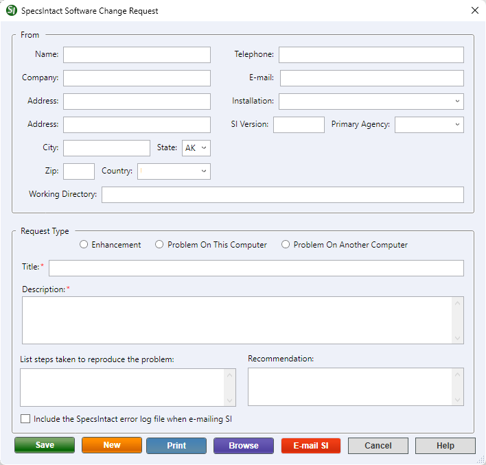

This command can only be executed from the SpecsIntact Explorer's Tools menu.
The Create/Edit Form command opens the SpecsIntact Software Change Request window, to create and submit a software enhancement or problem report for the assigned computer or an alternate computer (e.g., temporary, colleagues, or personal).
 When reporting a problem on another computer, we recommend updating the information specific to that system, such as the SI Version and the Working Directory. To locate the SI Version Number, navigate to the Help menu > About SpecsIntact. To locate a Working Directory, navigate to the Setup menu > Working Directories. When reporting an issue for a colleague, we recommend updating the user-related fields to reflect their details, not your own.
When reporting a problem on another computer, we recommend updating the information specific to that system, such as the SI Version and the Working Directory. To locate the SI Version Number, navigate to the Help menu > About SpecsIntact. To locate a Working Directory, navigate to the Setup menu > Working Directories. When reporting an issue for a colleague, we recommend updating the user-related fields to reflect their details, not your own.
 When submitting an enhancement or problem report, be sure to attach any images to your e-mail before sending it.
When submitting an enhancement or problem report, be sure to attach any images to your e-mail before sending it.

- From - Complete all the user-related information fields (e.g., Name, Company, Telephone, Address, etc.). Once saved, this information will auto-populate the next time you create a new enhancement or problem report, eliminating repetitive data entry. SpecsIntact automatically populates the Installation, SI Version, Primary Agency, and Working Directory fields. This information can be edited manually if necessary.
- Request Type - Indicates whether the submission is an enhancement request or a problem report on the current system or another system.
- Enhancement - When submitting an enhancement, enter a title to identify the request in Windows File Explorer. Enhancements should include a title, description, and recommendation. The title and description are required fields.
- Problem On This Computer - Problem reports should include a title, description, and a list of steps taken to reproduce the issue.
- Problem On Another Computer - This could be a temporary computer, a personal computer, or a colleague's computer. Problem reports should include a title, description, and a list of steps taken to reproduce the issue.
- Title - Provide a clear, concise title that summarizes the improvement or issue. The Title is a required companion to the Description.
- Description - Provide a clear and concise explanation of the suggestion or issue being reported. For enhancements, describe your suggestion and why it would be beneficial. For a problem, explain what happened and provide any relevant details that led to the issue being reported. The Description is a required companion to the Title.
- List steps taken to reproduce the problem - Provide a clear, concise, and numbered list of every step that led to the problem. This will help the SpecsIntact Technical Support resolve your issue quickly.
- Recommendation - Provide details to support the enhancement request. Include the benefit for users, the value it adds, or the improvement it brings, or alternative solutions to consider.
- Include the SpecsIntact error log file when e-mailing SI - Automatically attaches the SpecsIntact error log file in the email when submitting the problem report to the SpecsIntact Technical Support desk.
- Save button - Generates the form and saves it to the user's AppData roaming profile (e.g., C:\Users\UserID\AppData\Roaming\SpecsIntact\Template\Comment Archive folder).
- New button - Resets the information in the Request Type area, to easily update the request-specific information fields.
- Print button - Sends a copy to the default printer. To print multiple saved enhancements or problem reports, refer to the Tools menu > Software Change Request > Print Forms command.
- Browse button - Opens the Windows File Explorer, giving direct access to the Comments Archive folder to view all the saved enhancements and problem report forms.
- E-mail SI button - Opens an e-mail message using the system's default desktop e-mail client, such as Microsoft Outlook, Mozilla Thunderbird, etc., for sending the enhancement or problem report form to the SpecsIntact Technical Support.
Standard Windows Commands
 The Cancel button will close the window without recording any selections or changes entered.
The Cancel button will close the window without recording any selections or changes entered.
 The Help button will open the Help Topic for this window.
The Help button will open the Help Topic for this window.
How To Use This Feature
 To Submit a Software Enhancement:
To Submit a Software Enhancement:
- In the SpecsIntact Explorer, select the Tools menu and select Software Change Request, then select Create/Edit Form
- In the SpecsIntact Software Change Request window, below From, complete or modify all user-specific fields
- Below Request Type, select Enhancement, then enter a Title
- In the Description, enter a clear and concise description for the enhancement
- In the Recommendation, enter a clear and concise recommendation to support the request
- Click Save
- When the Change Request Saved But Not Submitted window appears, click OK
- Click E-mail SI to submit the request
- When the e-mail message opens with the attached form, perform the following:
- Attach screenshots, optional
- Add an informative message, optional
- Click Send
To Submit a Software Problem Report:
- In the SpecsIntact Explorer, select the Tools menu and select Software Change Request, then select Create/Edit Form
- In the SpecsIntact Software Change Request window, below From, complete or modify all user-specific fields
- Below Request Type, select Problem On This Computer or Problem On Another Computer, then enter a Title
- In the Description, enter a clear and concise description of the problem
- In the List steps taken to reproduce the problem, enter the steps taken to reproduce the issue
- Select Include the SpecsIntact error log file when e-mailing SI
- Click Save
- When the Change Request Saved But Not Submitted window appears, click OK
- Click E-mail SI to submit the request
- When the e-mail message opens with the attached SpecsIntact error log and form, perform the following:
- Attach screenshots, optional
- Add an informative message, optional
- Click Send
Users are encouraged to visit the SpecsIntact Website's Support & Help Center for access to all of our User Tools, including Web-Based Help (containing Troubleshooting, Frequently Asked Questions (FAQs), Technical Notes, and Known Problems), eLearning Modules (video tutorials), and printable Guides.